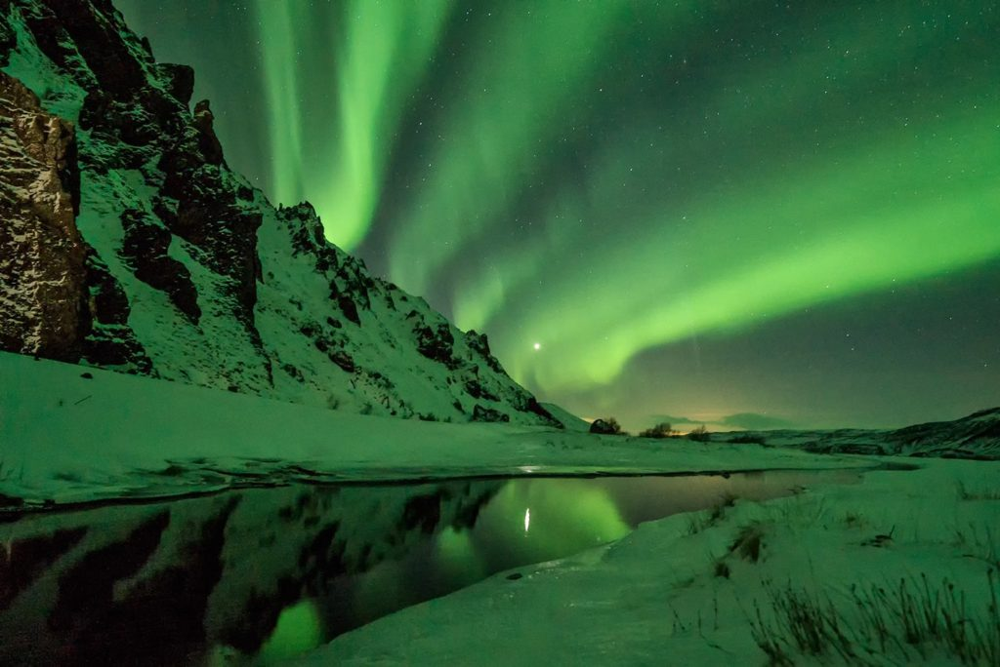
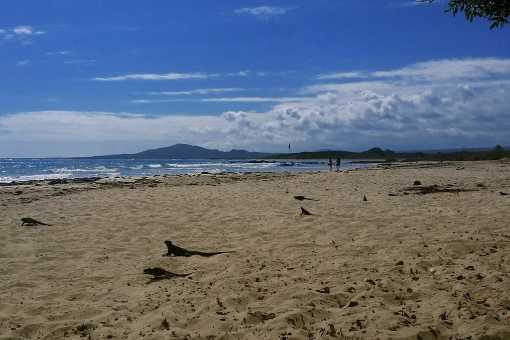

INICIO
CALIDOS
FRIOS
MONTAÑAS
EXOTICOS
LUGARES FRIOS


ISLANDIA: PARA VER LAS AURORAS BOREALES
LAS ISLAS GALÁPAGOS: PARA PRACTICAR SNORKEL EN UN PARAÍSO NATURAL
VIETNAM: PARA CAMINAR ENTRE CAMPOS DE ARROZ
Sin duda uno de los destinos que más se ha popularizado estos últimos años es Islandia, ya que es un lugar donde se puede ver con gran facilidad las auroras boreales. Pero no todo son auroras, también encontrarás paisajes nevados increíbles, glaciares inmensos y cascadas congeladas. Aunque las bajas temperaturas suelen ser protagonistas en esta época invernal, no hay nada como disfrutar de un buen baño termal.
Islandia es uno de los lugares ideales para visitar en las vacaciones de invierno por su cercanía y fácil acceso. Se puede empezar el viaje desde Reykjavik por tu cuenta u organizado, pero para llegar a los lugares más espectaculares que suelen ser también los más alejados, es recomendable contratar un servicio especializado y con vehículos 4x4, sobretodo en esta época del año.
Las islas Galápagos son todavía un destino poco conocido y se encuentran a 1.000km de la costa de Ecuador. Este destino es escogido cada invierno por muchos estadounidenses, sobre todo para recorrerlas en crucero. El snorkel, una de las actividades más practicadas en las Galápagos permite apreciar las maravillas del mundo submarino sin necesidad de experiencia.
¿Pero por qué vale tanto la pena visitar este lugar? Galápagos tienen un clima muy favorable que permite la práctica de las actividades acuáticas todo el año. Además es un sitio muy protegido, donde la fauna marina y terrestre se pueden observar con mucha facilidad. A nosotros nos encantó nadar entre lobos marinos, y si tienes suerte puede que se te acerque algún tiburón inofensivo.
Personalmente me encanta el arroz, muchos países tienen varios platos típicos con este cereal. Vietnam es uno de los principales productores de arroz en el mundo y en cuestión de viajes, comienza a destacar frente a la popular y vecina Tailandia.
¿Por qué te proponemos este destino? Porque es el lugar ideal para escapar por completo del frío. Vietnam se puede visitar todo el año, aunque también es uno de los mejores destinos para viajar en navidad por su valor económico y ¿Quién no desea presumir de bronceado a la vuelta?
Existen infinitas posibilidades de visitar este pequeño rincón del mundo. Una idea fuera de lo común es realizar un trek por los campos de arroz de la región de Sapa. La ruta a pie se realiza en el valle de Muong Hoa por impresionantes valles donde las terrazas de arroz aun en la actualidad se cultivan de forma tradicional y crean un maravilloso efecto visual. Indudablemente este es un viaje a realizar al menos una vez en la vida.